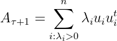
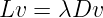

Metric Learning Tutorial
1 Metric Learning methods
Most
popular machine learning algorithms like k-nearest neighbour, k-means, SVM uses a metric to
identify the distance(or similarity) between data instances. It is clear that performances of these
algorithm heavily depends on the metric being used. In absence of prior knowledge about data we
can only use general purpose metrics like Euclidean distance, Cosine similarity or Manhattan
distance etc, but these metric often fail to capture the correct behaviour of data which directly
affects the performance of the learning algorithm. Solution to this problem is to tune the
metric according to the data and the problem, manually deriving the metric for high
dimensional data which is often difficult to even visualize is not only tedious but is
extremely difficult. Which leads to put effort on metric learning which satisfies the data
geometry.
Goal of metric learning algorithm is to learn a metric which assigns small distance to similar points
and relatively large distance to dissimilar points.
Definition 1.
A metric on a set X is a function (called the distance function or simply distance).
d : X × X → R,
where R is a set of real numbers, and for all x,y,z in X following condition are satisfied:
1.d(x, y) ≥ 0 (non-negativity)
2.d(x, y) = 0 if and only if x = y (coincidence axiom)
3.d(x, y) = d(y, x) (symmetry)
4.d(x, z) ≤ d(x, y) + d(y, z) (triangle inequality).
If a function does not satisfy the second property but satisfies other three then it is called a pseudometric. But since most of the metric learning methods learns a pseudometric instead of a metric for rest of the discussion we will refer pseudometric as metric. Most of the metric learning methods in literature learns the metric of form,
|
| (1) |
which is Mahalanobis distance,where, M = (A1∕2)T (A1∕2) is a positive semi-definite
matrix.
1.1 Supervised Metric Learning
Given a set of k dimensional data points X ∈ℛN×k, supervised metric learning methods learns a metric by using some similarity/dissimilarity information provided as a constraints. There are different formulations proposed for supervised metric learning accommodating different kinds of constraints. In a general supervised setting most popular form of constraints used in literature [kulis2012metric] are:
- 1.
- Similarity/dissimilarity constraints where, (i,j) ∈ S for objects that are similar, (i,j) ∈ D for objects that are dissimilar.
- 2.
- Relative constraints
R = (xi,xj,xk) : xi should be more similar to xj than to xk .:Where m is margin, generally m is chosen to be 1.
Next section summarizes some of the widely used methods.
1.1.1 Large Margin Nearest Neighbor
Large Margin Nearest Neighbour(LMNN) [weinberger2009distance] learns a metric of form 1
parameterized by matrix A for kNN classification setting. Intuition behind this method is to learn
a metric so that the k-nearest-neighbours belongs to the same class while instances with difference
class labels should be separated by a margin.
Let Xn×d is a set of data points in d dimensional space, and class labels yi : i = 1...n we define target neighbours for each point xi ∈ X as those points which are in k-nearest-neighbour of xi and share the same label yi and points which do not have same label as of xi we call them impostors. Formulation consist of two terms which compete with each other, first term is to penalizes the large distance between each point xi and its target neighbors while second term penalizes small distance between xi and impostors. Cost function is defined as:
|
| (2) |
Where Y ij and ηij are binary matrices such that Y ij is 1 when labels yi and yj match and ηij is 1 when xj is in the target neighbours of xi, in second term [z]+ = max(0,z) is a standard hinge loss function and c is some positive constant. Using cost function defined in 2 a convex optimization problem can be formulated as:
(3) |
1.1.2 Pseudo-Metric Online Learning Algorithm
Pseudo-Metric Online Learning algorithm (POLA) proposed by Shalev-Shwartz et al [shalev2004online] updated/learns the mertic in an online manner. In this method, given that 𝒳 denotes the feature space, POLA learns a metric of the form:
|
|
where A is a positive semi-definite (PSD) matrix that defines the metric. The algorithm receives new samples as similarity and dissimilarity pairs in the form of z = (x,x′,y) ∈ (𝒳×𝒳×{+1,−1}), where y = +1 if pair (x,x′) are similar, otherwise y = −1. The loss function is defined as:
|
| (4) |
where b ∈ ℝ is a threshold. If dA(x,x′) > b, we predict pairs to be dissimilar otherwise similar. The goal is to learn a matrix-threshold pair (Aτ,bτ) which minimizes the cumulative loss. At each step, the algorithm receives a pair (x,x′,y) and updates the matrix threshold pair (Aτ,bτ) in two steps:
- 1.
- Projecting the current solution (Aτ,bτ) onto set Cτ where
i.e. Cτ is a set of all matrix-threshold pairs which gives zero loss on (x,x′,y).
- 2.
- Projecting the new matrix-threshold pair to set of all admissible matrix-threshold pairs
Ca,
Projecting onto Cτ: We denote the matrix-threshold pair as a vector w ∈ ℝn2+1, and 𝒳 τ ∈ ℝn2+1 as a vector form of a matrix-scalar pair (−yτvτvτt,y τ), where vτ = xτ − x′τ. Using this, we can rewrite set Cτ as,
|
|
Now, we can write the projection of wτ onto Cτ as:
|
| (5) |
where ατ = 0 if wτ𝒳τ ≥ 1 otherwise ατ = (1 − wτ𝒳τ)∕||𝒳τ||22, i.e.
|
|
Based on this, we can update matrix-threshold pair as:
|
| (6) |
Projecting onto Ca:
Projecting bτ on set {b ∈ ℝ : b ≥ 1} is straightforward and can be achieved as bτ+1 = max{1,bτ}.
However, projecting A has two cases,
has two cases,
- yτ = −1: In this case, A
 becomes A
becomes A = Aτ + ατvτvτt and α ≥ 0. Therefore, A
= Aτ + ατvτvτt and α ≥ 0. Therefore, A ≽ 0
and hence, Aτ+1 = A
≽ 0
and hence, Aτ+1 = A .
.
- yτ = +1: In this case, we can write A = ∑
i=1nλ
iuiuit where u
i is the ith eigenvector of A
 and λi is corresponding eigenvalue. We can hence get Aτ+1 by projecting A
and λi is corresponding eigenvalue. We can hence get Aτ+1 by projecting A to the PSD cone
as:
to the PSD cone
as:

For every new sample pair, the update is done by successively projecting (Aτ,bτ) to Cτ and Ca.
1.1.3 Information Theoretic Metric Learning
Information Theoretic Metric Learning(ITML)[davis2007information] learns a mahalanobis
distance metric that satisfy some given similarity and dissimilarity constraints on input data. Goal
of ITML algorithm is to learn a metric of form dA = (xi −xj)′A(xi −xj) according to which similar
data point is close relative to dissimilar points.
ITML starts with an initial matrix dA0 where A0 can be set to identity matrix(I) or inverse of
covariance of the data and eventually learns a metric dA which is close to starting metric
dA0 and satisfies the the defined constraints. To measure distance between metrics it
exploits the bijection between Gaussian distribution with fixed mean μ and Mahalanobis
distance,
|
|
Using the above connection, the problem is formulated as:
|
| (7) |
Above formulation can be simplified by utilizing the connection between KL-divergence and LogDet divergence which is given as,
|
| (8) |
Using 8 and 7 problem can be reformulated as:
|
| (9) |
Above formulation can be solved efficiently using bregman projection method as described in [davis2007information].
1.1.4 Mirror Descent for Metric Learning
Mirror Descent for Metric Learning, by [kunapuli2012mirror], is online metric learning approach which learns a pseudo-metric of form,
|
|
given a pair of labeled points,(xt,zt,yt)T , where y
t denotes similarity/dissimilarity.
Taking μ as a margin, constraints can be written as,
1.2 Unsupervised Metric Learning
Unsupervised metric learning is generally seen as a byproduct of manifold learning or dimensionality reduction algorithms, although metric learning has a direct connection between linear manifold learning techniques as it finally learns a projective mapping but for non linear techniques, which are more useful, connection is not exact and can only be seen with some approximations. Because of these limitations of manifold techniques unsupervised metric learning has its own importance. Unsupervised metric learning aims to learn a metric without any supervision, most of the method proposed in this area either solve this problem in a domain specific way like clustering [cpcm] or by understanding the geometric properties of data.
1.2.1 Diffusion Maps
Diffusion maps [coifman2006diffusion] is a non-linear dimensionality reduction technique. Consider a graph G = (Ω,W) where Ω = i=1N are data samples and W is a similarity matrix with W(i,j) ∈ [0, 1]. W is obtained by applying Gaussian kernel on distances,
|
| (10) |
Using W we can obtain a transition matrix by row wise normalizing the similarity matrix:
|
| (11) |
Diffusion map introduce diffusion distance based on transition probabilities P of data, given as:
|
| (12) |
where, Pt = Pt.
1.2.2 Unsupervised metric learning using self-smoothing operator
Unsupervised metric learning using self-smoothing operator [jiang2011unsupervised] proposed a diffusion based approach to improve input similarity between data points. It uses similar framework as diffusion maps but instead of using the notion of diffusion distance it uses a Self Smoothing Operator(SSO) which preserves the structure of weight matrix W described in equation 10. Main steps of SSO algorithm are summarized below:
- 1.
- Compute smoothing kernel: P = D−1W, where D is a diagonal matrix such that D(i,i) = ∑ k=1n = W(i,k)
- 2.
- Perform smoothing for t steps: Wt = WPt
- 3.
- Self-normalization: W∗ = Γ−1W t where Γ is a diagonal matrix such that Γ(i,i) = Wt(i,i)
- 4.
- Project W∗ to psd cone Ŵ∗ = psd(W∗)
1.2.3 Unsupervised Distance Metric Learning using Predictability
Unsupervised distance metric learning using predictability [cpcm] learns a transformation of data which give well separated clusters by minimizing the blur ratio. This work proposes a two step algorithm to achive this task which alternates between predicting cluster membership by using linear regression model and again cluster these predictions. Given input data matrix XN×p with N number of points in p dimensional space goal is to find learn a mahalanobis distance metric d(x,y) = which minimizes the blur ration defined as:
|
|
where SSC and SST are within cluster variance and total variance respectively.
1.3 Laplacian eigenmaps
Laplacian eigenmaps learns a low dimensional representation of the data such that the local
geometry is optimally preserved, this low-dimensional manifold approximate the geometric
structure of data. Steps below describes the methods in detail.
Consider set of data points X ∈ℛN, goal of laplacian eigenmaps is to find an embedding in m
dimensional space where m < N preserving the local properties of data.
- 1.
- Construct a graph G(V,E) where E is set of edges and V is a set of vertices. Each node in
the graph G corresponds to a point in X, we connect any two vertices vi and vj by an edge if
they are close, closeness can be defined in 2 ways:
- (a)
- ||xi − xj||2 < 𝜖, ||.|| is euclidean norm in ℛN or,
- (b)
- xi is in k nearest neighbour of xj
here 𝜖 & k are user defined parameters.
- 2.
- We construct a weight matrix W(i,j) which assigns weights between each edge in the graph
G, weights can be assigned in two ways:
- (a)
- Simple minded approach is to assign W(i,j) = 1 if vertices vi and vj are connected otherwise 0.
- (b)
- Heat kernel based, we assign weight W(i,j) such that:
W(i,j) =
- 3.
- Construct laplacian matrix L = D − W of the graph G, where D is a diagonal matrix with
Dii = ΣjW(i,j). Final low dimensional embedding can be computes by solving generalized
eigen decomposition
 Let 0 = λ0 ≤ λ1... ≤ λm be the first smallest m + 1 eigenvalues, choose corresponding eigenvectors v1,v2...vm ignoring eigenvector corresponding to λ0 = 0. Embedding coordinates can be calculates as mapping:
yi , i = 1, 2...n is the coordinates in m dimensional embedded space.
1.4 Active Metric Learning
Active learning is a form of semi-supervised learning, difference is that in an active learning setup algorithm itself chooses what data it wants to learn. Aim is to select data instances which is most effective in training the model this saves significant cost to the end user end by asking less queries.
1.4.1 Active Metric Learning for Object Recognition
Active metric learning for object recognition by [ebert2012active] propose to combine metric learning with active sample selection strategy for classification. This work explores to exploitation(entropy based and margin based) and two exploration(kernel farthest first and graph density) based strategy for active sample selection. To learn a metric Information theoretic metric learning is used, which is combined with active sample selection is two different modes,
- 1.
- Batch active metric learning: In this mode metric is learned only once, it starts with querying the desired number of labeled data points according to the chosen sample selection strategy and learns a metric based on this labeled data.
- 2.
- Interleaved active metric learning: This approach alternates between active sample selection and metric learning.
1.4.2 Metric+Active Learning and Its Applications for IT Service Classification
Metric+Active learning [wang2009two] learns a metric for ticket classification which are used by IT service providers. This work proposed two methods to solve this problem:
- 1.
- Discriminative Neighborhood Metric Learning (DNML): DNML aims to minimize the local
discriminability of data which is same as maximize the local scatterness and to minimize the
local compactness simultaneously.
Where 𝒩io is nearest points from x i with same labels as of xi, 𝒩ie are nearest points from x i which have different labels than of xi.
- 2.
- Active Learning with Median Selection(ALMS): ALMS improves Transductive Experimental Design (TED) by using available labelled information.